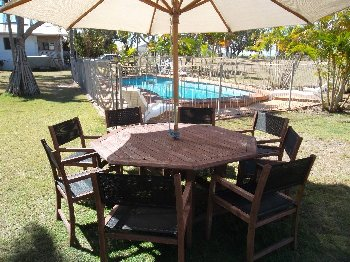
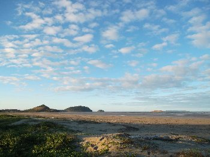

We have been the proud owners of Kinka Palms Motel since 2003 (18 years), and today we offer our wonderful property up FOR SALE, while also facing the incredibly sad prospect of saying farewell to the many 1,000's of wonderful people who loved staying with us and became regular customers and friends of our family.
For further information about our lovely motel, see the Ray White Real Estate listing:
To ensure motel staff and guest safety, we have implemented the following measures until further notice:
Kinka Palms Motel is still open, but operating at greatly reduced opening / office hours.
If you book on-line or via email to arrive within the next few days, make sure you phone us (07 4939 6437 from inside Aus, +61 74939 6437 from outside Aus) and confirm and coordinate your arrival time with us.
If anyone enters or stays in an apartment, then it is thoroughly sanitised and then left completely vacant for a minimum of 14 nights before being rented again.
While an apartment is booked, motel staff will NOT enter the apartment unless there is an emergency. No room service. Clean towels and linen will be provided to you once a week, and you will need to put the sheets on your bed yourself. Why ? We will NOT enter the apartment. We are doing everything possible to keep you safe from Coronavirus.
This notice takes precedence over all other notices, information, web pages, web sites, etc.
Welcome to our official web site.
We hope you find all of the information you need here,
but if you have any questions about anything, please
email me at KinkaPalms@yahoo.com.au.
Our apartments are family owned and operated, and we take a
great deal of pride in the accommodation, service, and facilities we provide.
Everything is very clean and maintained to a very high standard.
Don't just take our word for it,
see what our customers say about us.
We have 13 apartments, which can accommodate up to 38 people per night.
All of our apartments are fully self-contained, air-conditioned, ground level,
beach front, studio apartments, each with a large screen LCD TV, DVD player,
kitchen-ette, bathroom, and all linen and bath towels are supplied, free wireless
internet access, in a lovely, spacious tropical garden setting with sparkling
in-ground pool and located just across the road from beautiful Kinka Beach.
The kitchen-ette inside each apartment includes cutlery, crockery, a few pots and
pans, a microwave dish, toaster, kettle, a twin hot-plate (plug-in), and a full
size fridge / freezer. Kinka Beach has stunning views of Keppel Bay and more than
a dozen islands, including Great Keppel Island (about 15 Km offshore).
For pictures of our apartments, please
click here.
And, for further details of our Apartment Configurations, please
click here.
Our family apartments cater for up to 4 or 5 people and our
family apartments feature a separate bedroom for added space and privacy.
Sparking in-ground swimming pool.

We are located on the Capricorn Coast between Yeppoon and Emu Park in Central Queensland.
Free Wireless Broadband internet (BYO laptop or internet device).
Big screen LCD TV and DVD Player in all apartments.
Coin operated guest laundry.
Free gas BBQ facilities provided.
Ample parking (either on-site or at the front) for dozens of cars / boats / trailers.
We are Family friendly and Gay & Lesbian friendly.
We are "Electric Vehicle (EV)" friendly, so please do come and
stay with your electric cars and electric vehicles.
1 Restaurant, 2 x take-aways, and a cafe are within a 1.0 KM.

Local tourist attractions and "things-to-do" include: Koorana Crocodile Farm, Keppel Island, Cooberrie Park Wildlife Sanctuary,
4 golf courses, fishing trips, sailing trips, boat hire, horse riding, snorkeling, scuba diving, Nob Creek Pottery,
Footlights Theatre Restaurant, numerous National Parks, Singing Ship, Capricorn Caves, Heritage Village,
Emu Park Museum, and many more ! See Local Attractions for further information.
Very close to the beach, close to
Public Transport,
close to great fishing, with several golf courses nearby,
The perfect place for getaways and holidays all year around.
Please feel free to drop in for an inspection at any time.
We *always* welcome inspections !
*** Come for a night, and stay for a week. ***
Keywords:
Capricorn Coast Accommodation,
Elgan Motel,
Elgan Units,
Kinka Beach Accommodation,
Kinka Beach Motel,
Kinka Palms Apartments,
Kinka Palms Motel,
Kinka Palms,
Australia,
Australian,
Bungundarra,
Byfield,
Capricorn Coast,
Causeway Lake,
Causeway,
Central Queensland,
Emu Park,
Iwasaki,
Kemp Beach,
Kinka Beach,
Lake Mary,
Lammermoor Beach,
Lammermoor,
Mulambin,
Mullambin Beach,
Queensland,
Rockhampton,
Rosslyn Bay Marina,
Rosslyn Bay,
Rydges Resort,
Tarangaba,
Woodbury,
Yeppoon Beach,
Yeppoon,
Zilzie,
Get Wrecked,
Great Barrier Reef,
Great Keppel Island,
Islands,
Keppel Bay,
Keppel Island,
Keppel Islands,
Ocean,
Pacific Ocean,
Sailing,
sand,
sea,
sun,
cat friendly,
dog friendly,
pet friendly,
pets allowed,
air cond,
air conditioned,
air-cond,
air-conditioned,
Beach holiday,
Beach,
best price,
big screen LCD TV,
big screen TV,
corporate rates,
digital TV,
discounts for regular customers,
dvd player,
Electric Car friendly,
Electric Vehicle friendly,
EV friendly,
fishing,
free broadband,
free wireless broadband,
golf,
good value,
great price,
great value,
Hybrid Car friendly,
Hybrid friendly,
kitchen,
long stay discounts,
motel,
Plug In Electric (PLEG) friendly,
pool,
self contained,
weekly rates,
Bluff Rock (Iron Pot), Pleasant Island (Canonical Island), Corroboree Island (Terimul Island), North Keppel Island (Konomie Island), Pumpkin Island, Sloping Island, an un-named island in this same group, Creek Rock (Seagull Island), Miall Island (Mamalonbi Island), Middle Island (Balaba Island), Great Keppel Island (Woppa Island), Halfway Island, Humpy Island (Burye Burye Island), Pelican Island, and Wedge Island.
Visa card,
Visacard,
MasterCard,
EFTPOS,
Bitcoin,
Bitcoins,
Cryptocurrency,


 We hope you find all of the information you need here,
but if you have any questions about anything, please
email me at KinkaPalms@yahoo.com.au.
We hope you find all of the information you need here,
but if you have any questions about anything, please
email me at KinkaPalms@yahoo.com.au.